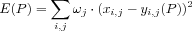
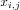
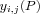
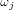
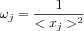
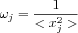
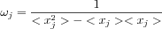
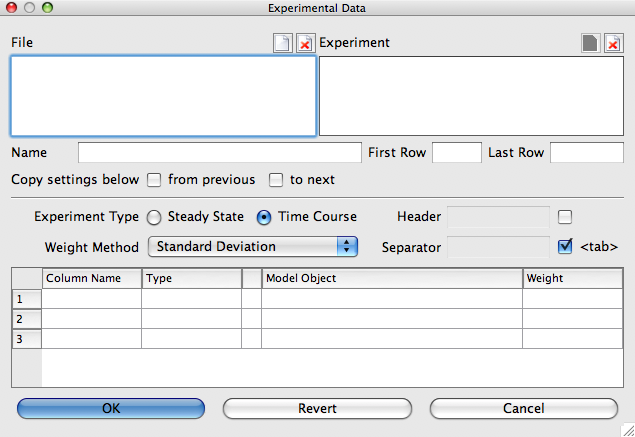

Before you can execute a parameter estimation task you need to specify the dataset which COPASI will use to fit the parameters you have specified. Each experiment of your dataset contributes to the objective function with the following weighted sum of squares:

Where P is the currently tested parameter set,  is a point in the dataset, and  the corresponding simulated value. The indices
i and
j denote rows and columns in the dataset. The weight for each data column is given by . COPASI provides 3 methods shown in the table below to calculate the weights for you. After applying the method chosen COPASI scales the weights so that for each experiment the maximal occurring weight is 1. In case that the weights calculated are not satisfactory you are able to manually override them individually.
Weight Calculation Methods| Name | Formula |
| Mean | ^{2}}$"> |
| Mean Square | }$"> |
| Standard Deviation | -}$"> |
To specify the experimental data you click on the Experimental Data button at the top right of the parameter estimation dialog. A new dialog opens that lets you enter experimental data.
|  |
| Experimental Data Dialog |
To read a data file, click on the open button beside the label File at the top of the dialog and choose a file that contains experimental data from the file dialog. The data file should contain experimental data grouped in experiments. To support automatic detection of experiments these must be separated by one or more empty lines. But manually definition of experiments is allowed. The data for an experiment must be a table of values. The columns of the table are separated by a user specifiable separation character. The default and recommended character is the <tab>-character. The first line of each experiment is treated as the row containing the column headings. However, this is only a default and the header row can be specified by the user. The header row may be anywhere in the file the data is contained. The purpose of the header row is to ease the interface to the data file and may be omitted. To tell COPASI that no header row is included uncheck the box next to the header. Once COPASI has read a file, you have to specify some information for each experiment included in the file. To select an experiment you choose it from the right selection box. The first thing you need to specify is whether the data belongs to a Steady-State analysis or to a time course simulation. You also have to associate the individual columns of input data to elements of the model. For this, you click on the ... button in each row and select the corresponding object in the selection dialog. It is mandatory that COPASI knows about the meaning of each data column. The data in a column can have four different types, which are:
- ignored
- Values in columns marked ignored are not taken into account during parameter fitting. Columns of this type may not be associated with elements of the model.
- independent
- Independent data is data which needs to be set for the correct simulation of the experiment row. Possible model elements are initial concentrations or kinetic parameters. Note, for a time course experiment only the independent data in the first data row is set before the start of the simulation. Columns of this type must be associated with elements of the model.
- dependent
- The dependent data is the data, which COPASI tries to fit by minimizing the sum of squares between the simulated data and the experimental data. Columns of this type must be associated with elements of the model.
- Time
- This column type is only available for time course experiments. Obviously only one column with this data type may exist. COPASI attempts to automatically identify the column containing the time by looking at the column headers. You may correct COPASI's guess. This column may not be mapped to any model elements.
The last column in each of the lines contains the weight for the specific data set. If it is calculated by COPASI (using one of the modes mentioned above) it is surrounded by brackets. If you want to change this value you have to remove the brackets and enter a different value. If you want to go back to automatically calculated values you can delete the content of the box completely and COPASI will return to automatically calculating the weight.
If you don't want COPASI to use the whole dataset of an experiment, but only a subset, you can specify the start and end line for this subset. You also may delete experiments completely. If you do so, you may notice that the New Document will be enabled. Pressing it will add the first not used experiment of the currently active file. Since it is commonly the case that all experimental data within one file has the same format, COPASI allows you to copy information of experimental data from the previous to the current or form the current to the next experiment within a file by selecting from previous and to next. If COPASI detects that experimental data descriptions are identical it will automatically set the from previous check box and disable editing the current experiment. Should you want to modify it you will have to unmark the check box first.
If you have more than one file, you can load additional data files and process them in the same manner. Once you are finished defining your datasets for the fitting, you close the data dialog with the OK button. Before you can start the parameter estimation process, you have to choose the method by which the fitting will be done and maybe set some method parameters. Most of the time, the default parameter values should do. The method choosing is done at the bottom of the dialog by selecting the method from the drop down list. For an explanation of the individual methods, please consult the methods section.